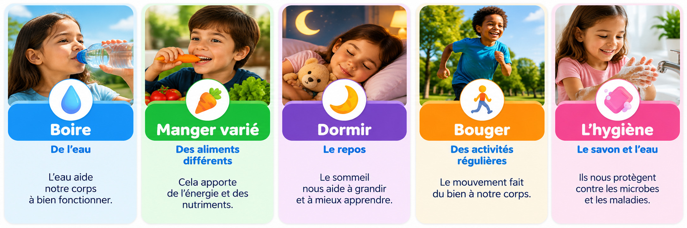

Sciences · Corps humain
Les besoins du corps
Leçon — À retenirPour grandir et rester en bonne santé, notre corps a besoin de boire de l’eau, de manger varié, de dormir, de bouger et de se laver.
Je découvre

À toi de jouer !
Réponds aux 5 questions. Tu peux réessayer.